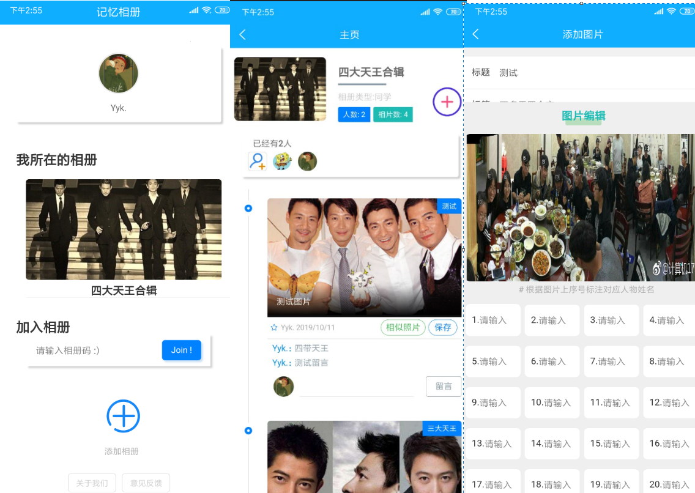
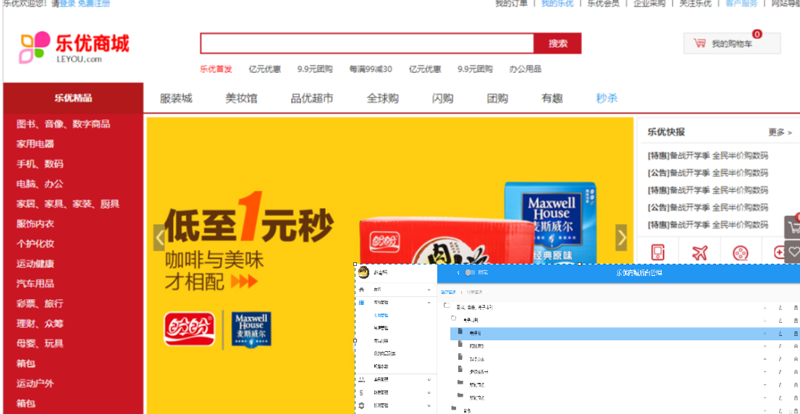
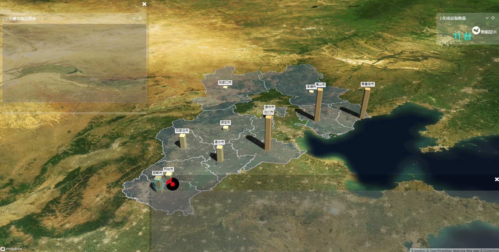

-
记忆相册
- 基于 Vue 使用 `uniapp` 开发，多端使用（手机APP，H5端，微信小程序等）。 具备多人共享，人脸识别，图片归类等功能
- UniApp 优酷观看
-
乐优商城
- 学习 SpringBoot 时做的项目，整个乐优商城可以分为两部分：后台管理系统，前台门户系统。 技术栈包括：SpringBoot、SpringCloud、Vue等
- Java GitHub
-
鲸风检测系统
- 河北省天气质量指数可视化，使用了 ECharts 和 mapbox 技术栈。 这是一个物联网系统，搭配硬件进行数据获取，实时展示在检测平台
- ECharts GitHub
-
博客

- 此项目是参加php中文网第三期培训的结课作业. 功能:用户登录,用户注销,发表博文,编辑博文,标签,评论,完整的后台管理系统. 技术栈:html,Css,js,php,Mysql,jQuery,Bootstrap. 后台模板:X-admin
- PHP Github